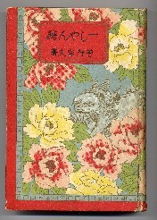
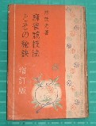

（10）麻雀学ベスト10（和書） |
|||||||
|
|||||||
| 著者50音順 | 書名 | 刊行日 | 出版社 | ||||
| 1 | 家川弥吉（いえかわ やきち） | 麻雀賛 | S44.11.30 | 全日本麻雀連盟 | |||
| 評 | 入難度 Ｈ 雀学度 Ｈ 影響度 Ｌ（自費出版のため） 関西麻雀界の歴史等を知るのに欠かせない貴重書。著者は雀界の先人にして関西麻雀会の重鎮。. |
||||||
| 2 | 菅野容夫（すがの やすお） | 一しゃん聴 | S6.5.25 | 文雅堂 | |||
| 評 | 入難度 Ｈ 雀学度 Ｍ 影響度 Ｌ 一向聴を分析した、日本最初の本格的戦理書。 手作業で、これだけの分類をするのは、さぞかし 大変だったと思う。著者は日本麻雀界の先人。 |
 | |||||
| 3 | 田中貞行（たなか さだゆき） | 麻雀用語大辞典 | S55.5 | 筑摩書房 | |||
| 評 | 入難度 Ｍ 雀学度 M 影響度 Ｌ（地方出版のため） 本格的な麻雀用語大辞典。著者は日本麻雀道連盟の幹部。 |
||||||
| 4 | 手塚晴夫（てづか はるお） | 南は北か | H1.11.3 | 日雀連 | |||
| 評 | 入難度 Ｈ 雀学度 Ｈ 影響度 Ｍ 日本麻雀界の先人の足跡を知るのに欠かせない貴重書。著者は日本最古の団体、日本麻雀連盟で屈指の名理事長。 |
||||||
| 5 | 中村徳三郎（なかむら とくさぶろう） | 麻雀競技法 | T13.10.20 | 千山閣 | |||
| 評 | 入難度 Ｍ（発行部数大） 雀学度 Ｈ 影響度 Ｍ 入門書であるが、学究書としての価値が高い。著者は日本麻雀界の大先人。裏表紙に本物の馬吊（著者のコレクション）が添付してある事で有名（本１冊ごとに違うカード）。 |
 |
|||||
| 6 | 中村徳三郎（なかむら とくさぶろう） | 麻雀疑問解答 | S3.9.1 | 千山閣 | |||
| 評 | 入難度 Ｈ 雀学度 Ｈ 影響度 Ｈ 黎明期の本格的学究書。 著者は日本麻雀界の大先人。 |
||||||
| 7 | 榛原茂樹（はいばら しげき） | 麻雀精通 | S4.11.20 | 春陽堂 | |||
| 評 | 入難度 M（発行部数大） 雀学度 Ｈ 影響度 Ｈ 黎明期の本格的学究書。著者は日本麻雀学の泰斗。 |
||||||
| 8 | 平野茂兵衛（ひらの もへえ） | 麻雀五段戦法 | S7.8.10 | 藤田誠光堂 | |||
| 評 | 入難度 S 雀学度 Ｈ 影響度 L（地方出版社発行のため） これを読んで「すごい」と思える人はすごい人（だと思う）。著者は黎明期における巨人。 |
||||||
| 9 | 村石利夫（むらいし としお） | 麻雀１０１話 | S51.7.20 | 光風社 | |||
| 評 | 入難度 Ｈ（発行部数小） 雀学度 Ｈ 影響度 Ｍ 雑学書No.1。 著者は日本麻雀道連盟会長。 |
 |
|||||
| 10 | 林 茂光（りん もこう） | 麻雀競技法とその秘訣 | S4.12.12 | 四六書院 | |||
| 評 | 入難度 M 雀学度 Ｈ 影響度 Ｈ 入門書であるが、学究書としての価値も非常に高い。著者は日本麻雀界の大先人。今日、「牌聖」と称えられる。 |
 | |||||
| 番外 | 浅見 了（あさみりょう） | 麻雀法学セミナー | s45.12.01 | 自費出版 | |||
| 評 | 入難度 S 雀学度 L(_ _) 影響度 L(_ _) 君を麻雀法学博士にする。(^-^； |
 |
|||||
| 麻雀団体 | |||||||
| 1 | 入難度 Ｈ 雀学度 Ｈ 影響度 H 林茂光麻雀研究所 |
麻雀 | S5〜S7 | 機関誌 | |||
| 2 | 入難度 Ｈ 雀学度 Ｈ 影響度 H 日本麻雀連盟 |
麻雀春秋 | S4〜S7/6 | 機関誌 | |||
| 3 | 入難度 Ｈ 雀学度 Ｈ 影響度 M 大日本麻雀連盟 |
麻雀日本 | S7/7〜S8/3 | 機関誌 | |||
| 評 | どの機関誌も情報の宝庫！ | ||||||